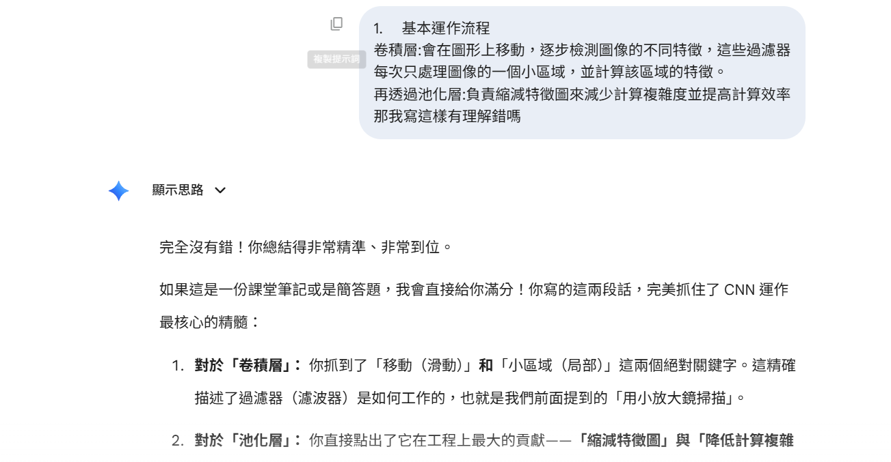

演算法介紹與概念視覺化：什麼是 CNN？
卷積神經網路（Convolutional Neural Network，簡稱 CNN）是一種影像辨識模型，在圖像和語音辨識方面能夠給出好的結果。它的架構靈感來自於生物的視覺神經系統，是透過「局部掃描」的方式，去取出圖片中重要的特徵，最後綜合起來去辨識影像。
主要解決什麼問題？
在 CNN 演算法出來之前，影像處理遇到的難點是「只要位置偏移了，就不認得了」。而 CNN 透過滑動掃描的機制，確保了無論特徵出現在畫面的哪一個角落，都能被精準捕捉並辨識出來。

基本運作流程說明
卷積層
會在圖形上移動，逐步檢測圖像的不同特徵，這些過濾器每次只處理圖像的一個小區域，並計算該區域的特徵。
激活函數
將計算出的負值歸零，只保留有用的強烈訊號（過濾雜訊）。
池化層
負責縮減特徵圖來減少計算複雜度，並提高計算效率。
全連接層
將前面歸納出的特徵綜合起來，給出最終的辨識結果（例如判斷是貓還是狗）。
互動視覺化說明：卷積掃描運作概念
這裡以視覺化方式呈現前述「卷積層」的運作。您可以點選「$5 \times 5$ 輸入矩陣」更改數值，或點擊「單步執行 / 自動播放」。右側會即時模擬滑動掃描機制，將局部特徵運算後輸出特徵圖，這正是 CNN 確保特徵偏移也能辨識的核心！
1. 預設過濾器設定
播放控制台
當前數學公式計算步驟：
卷積運算對應位置元素相乘後求和：
AI 輔助學習紀錄
與 AI 對話截圖證明

1. 我問了 AI 什麼問題？
為了從零開始建構對 CNN 的理解，我請 AI 扮演資深老師，並依序詢問了三個核心問題：
- 請教我 CNN 是什麼？
- 這個演算法主要解決了什麼問題？
- 基本的運作流程為何？
2. AI 的回答重點是什麼？
- 概念引入： AI 將圖片比喻為 C++ 或 Java 中的 2D Array，說明電腦眼中的圖片只是一堆數字。
- 痛點分析： AI 用「打散拼圖的災難」來比喻傳統神經網路強迫將圖片拉成一維直線的缺點，清楚點出「破壞空間關係」是傳統 AI 的致命傷。
- 流程視覺化： AI 將 CNN 運作流程比喻為「高科技影像辨識工廠」的流水線，將抽象的演算法具象化為各個標準工作站。
3. 這些回答如何幫助我理解？
AI 提供的解答跳脫了生硬的數學公式，特別是「打散的拼圖」與「程式語言 2D Array」的比喻，讓我能快速且直觀地理解 CNN 為何必須保留二維空間特徵。這幫助我在撰寫前面的「演算法介紹」時，能夠真正用自己的話將核心概念表達出來，而不是單純複製維基百科的定義。
問題與查證：深挖原始資訊
選擇 AI 回答中的重點進行查證：
我請 AI 總結了 CNN 的基本運作流程。AI 在回答中列出了四個關鍵步驟：卷積層、激活函數 (ReLU)、池化層，以及全連接層。
但在我自己上網查到的中文資訊中，通常只找到「卷積層」和「池化層」，這讓我產生了疑惑。
查證過程與工具輔助
為了解決疑惑，我主動請 AI 給我它的參考資訊。然而，AI 提供的是一篇全英文的學術參考資料（例如史丹佛教材）。
導入 NotebookLM 進行學習
面對生硬的英文資料，我沒有放棄，而是將這份文獻丟到 Google 的 NotebookLM 裡面去做輔助學習與分析。
查證結果與修正：
經過 NotebookLM 的解析與交叉比對，我證實了 AI 的說法是正確的！一個完整的 CNN 模型架構中，確實包含了「激活函數（用來過濾雜訊）」和「全連接層（用來綜合特徵給出結果）」。這讓我修正了原本不完整的網路中文資訊，獲得了最準確的知識架構。
CNN 的常見應用場景
影像辨識與分類
Image Classification
這是 CNN 最基礎也最常見的應用。例如智慧型手機的相簿能自動將成千上萬張照片分類為「人物」、「風景」、「美食」或「寵物」；社群平台也利用此技術自動過濾並阻擋含有暴力或不當內容的圖片。
自動駕駛與物件偵測
Autonomous Driving & Object Detection
CNN 不僅能辨識圖片中有什麼，還能精準框出目標物「在哪裡」。在自動駕駛系統中，車載電腦必須依靠 CNN 即時掃描畫面，快速偵測並追蹤前方的車輛、行人與紅綠燈，以確保行車安全。
醫學影像輔助分析
Medical Image Analysis
CNN 被大量投入於智慧醫療領域，用來協助專業醫師判讀 X 光片、MRI 或 CT 掃描圖。模型能夠自動標示出肉眼難以察覺的微小病灶或早期腫瘤區域，大幅減輕醫護人員負擔並提高診斷準確率。
學習反思
在這次撰寫 CNN 演算法報告的過程中，我深刻體會到將 AI 作為「學習助教」的優勢。AI 能將生硬的學術名詞轉化為好懂的比喻，大幅降低了初學者的進入門檻。
這次作業最大的收穫，在於「查證能力」的提升。當我對 AI 提出的 「激活函數與全連接層」 產生疑問時，我學會了主動要求 AI 提供原始文獻。
面對艱澀的史丹佛全英文教材，我沒有放棄，而是進一步利用 NotebookLM 這樣的工具來輔助閱讀與交叉比對。這讓我領悟到，未來的學習不再是死讀書，而是「如何精準提問、如何善用工具查核真偽、如何解讀第一手資料」的整合能力。